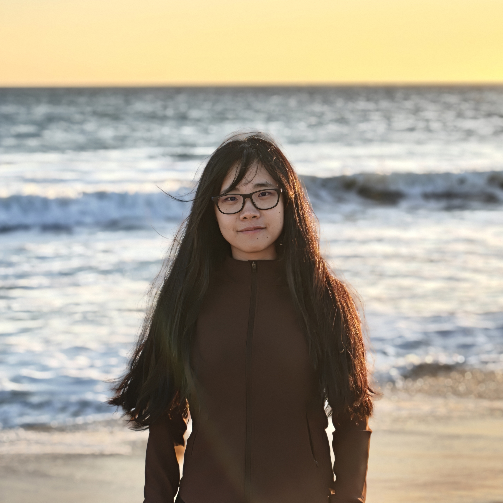

Build
Integrate the structure, payload, onboard power, actuation, and control.
Student planetary robotics
Design, build, and test a tensegrity lander that protects a scientific payload, survives impact, and responds under its own power after landing.
01 compliant structure
02 protected payload
01 / The mission
Future missions need landing systems that are lightweight, resilient, and ready for unpredictable terrain. Tensegrity structures offer a different answer: distribute impact through a network of tension and compression.
Your team will act as a planetary robotics crew. The goal is to create an untethered tensegrity lander that protects its payload through impact, remains operational, and completes a visible post-landing shape change. Controlled locomotion is a stretch goal.
Integrate the structure, payload, onboard power, actuation, and control.
Absorb impact while protecting the scientific payload.
Complete a visible shape change after landing; movement is the stretch goal.
NASA concept reference
NASA Ames developed SUPERball as a tensegrity robot concept that could absorb landing impact, protect a payload, recover in any orientation, and then roll across uncertain terrain. This is the big idea behind the challenge—not a conventional rover wrapped in a cage, but a robot whose structure is itself the landing system.
02 / The program
Short, focused briefings introduce each new skill. Most program time is reserved for building, testing, and improving the robot with your team.
Launch
Open the mission handbook, meet your team, and turn the challenge into a first design concept.
Workshop 01
Learn the force paths, prestress, and rapid-prototyping principles behind stable tensegrity structures.
Workshop 02
Integrate onboard power, motors, encoders, wireless control, and safe bench-testing practices.
Checkpoint
Show an early prototype, identify the highest-risk subsystem, and leave with a focused test plan.
Guest lecture
Connect your design choices to real landing, mobility, and reliability problems in planetary exploration.
Workshop 03
Plan repeatable drop tests, protect the payload, document failure, and verify post-landing actuation.
Test support
Use the drop zone, troubleshoot with mentors, and complete the evidence needed for final decisions.
Final event
Complete the official mission test and present the design decisions, data, and iterations behind your robot.
03 / Core mission
Every team begins with the same five requirements. Final drop height, payload mass, and measurement thresholds will be published after pilot testing.
Carry onboard power and control. Wireless commands are allowed; external power or control wires are not.
RequiredKeep the standard payload secured and functional through the official baseline drop.
RequiredRemain test-ready without external repair or reassembly; critical electronics and actuation must still function.
RequiredWithin 60 seconds, complete one visible and repeatable shape-change cycle after landing.
RequiredUse no more than $500 in purchased components. School fabrication access and standard print materials are excluded.
Required04 / Award tracks
All teams first complete the same core mission. Four equal $500 prizes recognize four distinct forms of engineering achievement.
For the most repeatable high-energy landing with payload and robot systems still operational.
For the strongest controlled and repeatable movement after the official landing test.
For an original morphology, actuation strategy, or deployment concept validated through testing.
For the most reliable, integrated, and evidence-driven system and development process.
Team component budget
Each team may request up to $500 for approved components used in its competition robot.
Purchased batteries, motors, electronics, hardware, and specialty materials.
School-provided fabrication equipment and standard 3D-printing materials.
Research & education support
This program is supported through the Consortium's Research and Education Awards Program (REAP) for library-based tensegrity robotics workshops, NASA-relevant robotics education, and aerospace workforce development.
Learn about NASA SCSGC ↗05 / Organizers
The challenge brings together robotics engineering and education research to create a build experience that is technically ambitious, collaborative, and evidence-driven.
Co-Organizer · Learning & Assessment Lead
Strategic Assessment Librarian at Clemson University. His research connects human–computer interaction, higher education, and evidence-based learning design.

Co-Organizer · Robotics & Technical Lead
Assistant Professor of Electrical and Computer Engineering at Clemson University and director of the SMILE Robotics Lab, working on soft, modular, and tensegrity robots.
Interest list now open
We are preparing the inaugural Tensegrity Challenge. Tell us you are interested and we will share eligibility, dates, team formation details, and the full mission handbook.
Email the organizers ↗ tensegritychallenge@gmail.com